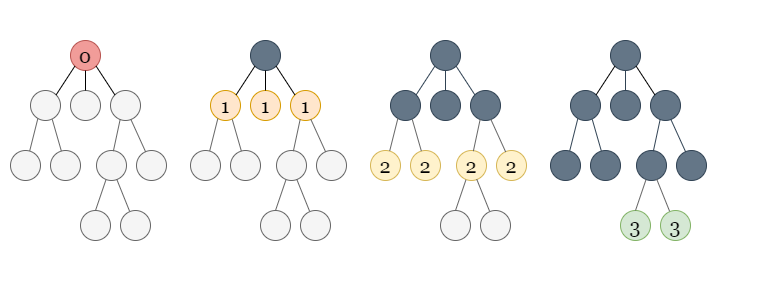
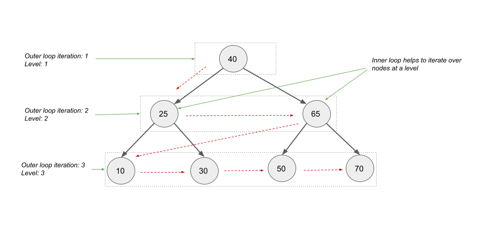

We are given the root of a binary tree.
Our task is to return the smallest level x such that the sum of all the values of nodes at level
x is maximal.
The task is to compute the sum of all node values at each level to get the highest level with the maximum sum.
We can simply use a standard breadth-first search traversal because we need to analyze nodes by level.
BFS is an algorithm for traversing or searching a graph. It traverses in a level-wise manner, i.e., all the nodes at
the present level (say l) are explored before moving on to the nodes at the next level (l +
1). BFS is implemented with a queue.
Here is an example with the steps:

If you are not familiar with BFS traversal, we suggest you read our LeetCode Explore Card.
We initialize a queue of integers and an integer level = 0 to track the current level. In the queue, we
push the root node.
We perform a level-wise traversal, incrementing level by 1 each time when we move to a new
level. At each iteration, we remove all nodes at level, compute the sum of all node values at this
level, and insert all their neighbouring nodes at level + 1.
Because we are popping all of the nodes at level and inserting all of the nodes at level +
1, the size of the queue will represent the number of nodes at the next level at the end of this iteration.
So we have two loops: the outer loop runs until the queue is empty, and the inner loop runs the number of times equal
to the size of the queue to just cover the nodes at the current level. We will pop all the nodes at
level, compute the sum of all the values, and insert all the nodes at level + 1 into the
queue.
Here is a visual represenation of how we will iterate using the loops:

To get the answer, we compare the sum of all node values at the current level to the maximum sum of values we've
already seen. If the current sum of node values is greater than what we've seen before, we update our answer to
level, and the current sum becomes our largest sum of values seen thus far. Since we are traversing the
higher levels first, by only updating the answer when the level sum is greater than what we've seen
before, we handle the tiebreakers automatically.
maxSum to keep track of the maximum sum of node values at any level. We
start with a large negative value.
ans to store the answer to the problem.level to store the current level through which we are iterating. We
initialize it with 0.
q of TreeNode and push root into it.level by 1 and initialize sumAtCurrentLevel = 0 to
compute the sum of all values of nodes at this level.
level using only the q.size() number of
nodes. Within this inner loop, pop out all the nodes at the current level one by one, adding their
values to sumAtCurrentLevel and pushing the left and right children (if they exist) into
the queue.
level, the queue only has nodes at level
+ 1.
level, we check if sumAtCurrentLevel
is greater than maxSum. If maxSum < sumAtCurrentLevel, update our answer
variable to ans = level and set maxSum = sumAtCurrentLevel.
ans.
Java
class Solution {
public int maxLevelSum(TreeNode root) {
int maxSum = Integer.MIN_VALUE;
int ans = 0, level = 0;
Queue q = new LinkedList<>();
q.offer(root);
while (!q.isEmpty()) {
level++;
int sumAtCurrentLevel = 0;
// Iterate over all the nodes in the current level.
for (int sz = q.size(); sz > 0; --sz) {
TreeNode node = q.poll();
sumAtCurrentLevel += node.val;
if (node.left != null) {
q.offer(node.left);
}
if (node.right != null) {
q.offer(node.right);
}
}
if (maxSum < sumAtCurrentLevel) {
maxSum = sumAtCurrentLevel;
ans = level;
}
}
return ans;
}
}
C++
class Solution {
public:
int maxLevelSum(TreeNode* root) {
int maxSum = INT_MIN;
int ans = 0, level = 0;
queue q;
q.push(root);
while (!q.empty()) {
level++;
int sumAtCurrentLevel = 0;
// Iterate over all the nodes in the current level.
for (int sz = q.size(); sz > 0; --sz) {
TreeNode* node = q.front();
q.pop();
sumAtCurrentLevel += node->val;
if (node->left != nullptr) {
q.push(node->left);
}
if (node->right != nullptr) {
q.push(node->right);
}
}
if (maxSum < sumAtCurrentLevel) {
maxSum = sumAtCurrentLevel;
ans = level;
}
}
return ans;
}
};
Python3
class Solution:
def maxLevelSum(self, root: Optional[TreeNode]) -> int:
max_sum, ans, level = float('-inf'), 0, 0
q = collections.deque()
q.append(root)
while q:
level += 1
sum_at_current_level = 0
# Iterate over all the nodes in the current level.
for _ in range(len(q)):
node = q.popleft()
sum_at_current_level += node.val
if node.left:
q.append(node.left)
if node.right:
q.append(node.right)
if max_sum < sum_at_current_level:
max_sum, ans = sum_at_current_level, level
return ans
Here nn is the number of nodes in the given binary tree.
Time complexity: O(n)O(n).
Space complexity: O(n)O(n).
We can also use another traversal method, depth-first search (DFS).
In DFS, we use a recursive function to explore nodes as far as possible along each branch. Upon reaching the end of a branch, we backtrack to the next branch and continue exploring.
Once we encounter an unvisited node, we will take one of its neighbor nodes (if exists) as the next node on this branch. Recursively call the function to take the next node as the 'starting node' and solve the subproblem.
If you are new to Depth First Search, please see our LeetCode Explore Card for more information on it!
Because our task is to compute the sum of all the values of nodes at each level, we can perform a DFS traversal and pass the level of each node as an extra parameter.
We can initialize a list of integers sumOfNodesAtLevel, where sumOfNodesAtLevel[i] stores
the sum of all the values of nodes at level i. Whenever we visit a node at a level, say l,
we increment the index l in the list by the value of the current node. According to the problem
definition, the levels should begin with 1, but to keep the list as 0-indexed, we will
begin with level 0 (the root's level) and increment our answer by 1 at the end.
The question that may arise is how long this list should be.
We know that in a DFS traversal, we either move down the tree (until we can) to a node at the next level or we
backtrack to a node at a lower level. As we descend the tree, if we come across a level l we haven't
seen before, we add the node's value to sumOfNodesAtLevel, which places the entry at index
l itself. This is due to the fact that all levels from 0 to l - 1 must have
already been seen and have corresponding values in sumOfNodesAtLevel.
So, if the size of sumOfNodesAtLevel equals l, it means we've seen nodes from levels 0
to l - 1 but not any nodes at level l yet. At level l, this is the first node
we see.
If the level l is smaller than the size of sumOfNodesAtLevel, it means we've seen some
nodes at this level before, and we simply increment sumOfNodesAtLevel[l] by the value of the current
node.
sumOfNodesAtLevel to store the sum of all the values of nodes at a level.
The value sumOfNodesAtLevel[i] stores the sum of all the values of nodes at level i
(0-indexed). We would start our levels from 0 to keep the array 0-indexed and finally
increment our answer by 1 to align with the problem definition of the level (levels begin with
1 as stated in the problem).
dfs(root, 0, sumOfNodesAtLevel) where
dfs is a recursive method that takes three parameters: TreeNode node from which the
traversal begins, the level of node, and sumOfNodesAtLevel. We perform the following
in this method:
node is null, return.sumOfNodesAtLevel equals level, we haven't encountered any
nodes at this level. Hence, we insert node.val in sumOfNodesAtLevel.
Otherwise, if we've seen this level before, we simply perform sumOfNodesAtLevel[level] +=
node.val to add node.val to the corresponding level.
node.left.node.right.maxSum to keep track of the maximum sum of node values at any level. We start
with a large negative value.
ans to store the answer to the problem.sumOfNodesAtLevel and perform
the following:
maxSum < sumOfNodesAtLevel[i], we set maxSum = sumOfNodesAtLevel[i] and
update ans to the level i + 1 (+1 is added to align with the
definition of level).
ans.
Java
class Solution {
public void dfs(TreeNode node, int level, List sumOfNodesAtLevel) {
if (node == null) {
return;
}
if (sumOfNodesAtLevel.size() == level) {
sumOfNodesAtLevel.add(node.val);
} else {
sumOfNodesAtLevel.set(level, sumOfNodesAtLevel.get(level) + node.val);
}
dfs(node.left, level + 1, sumOfNodesAtLevel);
dfs(node.right, level + 1, sumOfNodesAtLevel);
}
public int maxLevelSum(TreeNode root) {
List sumOfNodesAtLevel = new ArrayList<>();
dfs(root, 0, sumOfNodesAtLevel);
int maxSum = Integer.MIN_VALUE;
int ans = 0;
for (int i = 0; i < sumOfNodesAtLevel.size(); i++) {
if (maxSum < sumOfNodesAtLevel.get(i)) {
maxSum = sumOfNodesAtLevel.get(i);
ans = i + 1;
}
}
return ans;
}
}
C++
class Solution {
public:
void dfs(TreeNode* node, int level, vector& sumOfNodesAtLevel) {
if (node == nullptr) {
return;
}
if (sumOfNodesAtLevel.size() == level) {
sumOfNodesAtLevel.push_back(node->val);
} else {
sumOfNodesAtLevel[level] += node->val;
}
dfs(node->left, level + 1, sumOfNodesAtLevel);
dfs(node->right, level + 1, sumOfNodesAtLevel);
}
int maxLevelSum(TreeNode* root) {
vector sumOfNodesAtLevel;
dfs(root, 0, sumOfNodesAtLevel);
int maxSum = INT_MIN;
int ans = 0;
for (int i = 0; i < sumOfNodesAtLevel.size(); i++) {
if (maxSum < sumOfNodesAtLevel[i]) {
maxSum = sumOfNodesAtLevel[i];
ans = i + 1;
}
}
return ans;
}
};
Python3
class Solution:
def maxLevelSum(self, root: Optional[TreeNode]) -> int:
def dfs(node: TreeNode, level: int, sum_at_current_level: List) -> None:
if not node:
return
if len(sum_at_current_level) == level:
sum_at_current_level.append(node.val)
else:
sum_at_current_level[level] += node.val
dfs(node.left, level + 1, sum_at_current_level)
dfs(node.right, level + 1, sum_at_current_level)
sum_at_current_level = []
dfs(root, 0, sum_at_current_level)
return 1 + sum_at_current_level.index(max(sum_at_current_level))
Here nn is the number of nodes in the given binary tree.
Time complexity: O(n)O(n).
sumOfNodesAtLevel
for each node, which takes O(n)O(n)
time for nn nodes.
sumOfNodesAtLevel is equal to the height of tree. We iterate over all the
values in sumOfNodesAtLevel to get the level with maximum sum of node values. In the
worst-case scenario, when the tree is a straight line, the height would be O(n)O(n),
requiring O(n)O(n)
time to iterate over sumOfNodesAtLevel.
Space complexity: O(n)O(n).
sumOfNodesAtLevel would also take linear space in the worst case.